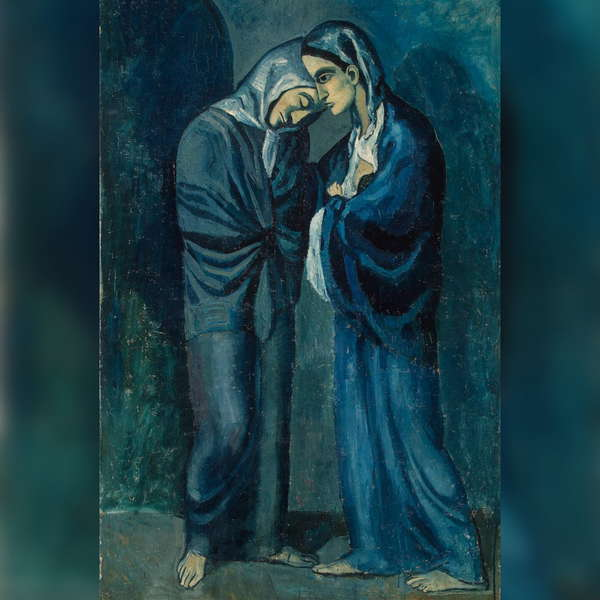

Пабло Пикассо
Две сестры
Пикассо написал картину в лазурных и темно-синих тонах в период своего
творчества, который называют «голубым». Традиционно холодные цвета служат для изображения чувств смирения и
искупления, которые не чужды христианским мотивам.
Одна из сестер передает своего ребенка второй, которая заберет его в монастырь. Идея для картины родилась у
Пикассо в больнице для женщин «легкого поведения». Получился по-настоящему библейский сюжет: раскаивающаяся
грешница и мудрая принимающая монахиня.